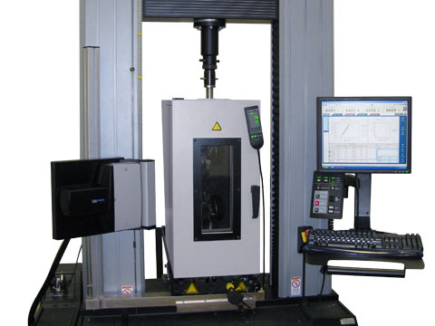
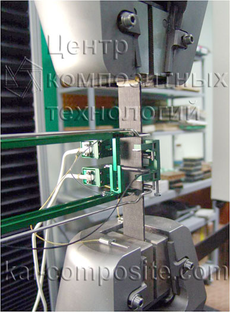
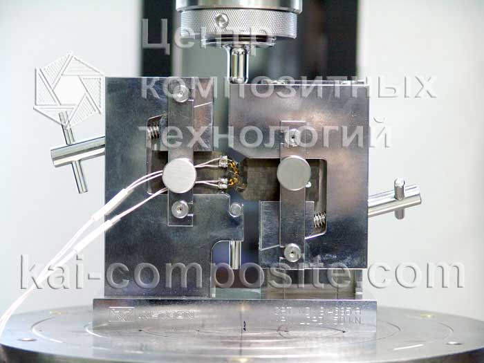
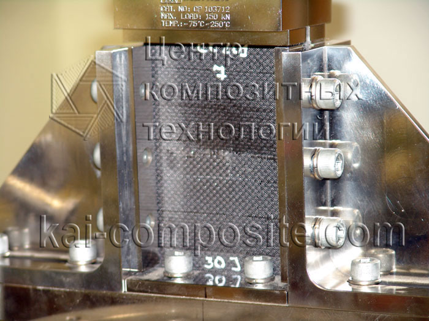
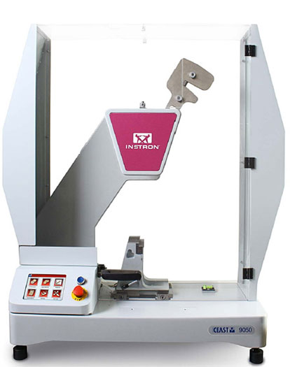

электромеханическая универсальная машина с термо- криокамерой
производитель: Instron
Назначение: механические испытания композитов (сжатие, растяжение, сдвиг, изгиб). Испытания при повышенных температурах многослойных панелей.
| Основные технические характеристики | |
|---|---|
| Усилие, кН | до 100 |
| Макс. перемещение подвижной траверсы, мм | до 1500 |
| Рабочая температура,°С | от 20 до 300 |
| Диапазон скоростей, мм/мин | до 500 |
| Набор силоизмерителей, кН | 100; 5; 0,1 |
| Датчики для измерения деформаций образцов | |
|---|---|
| Измерение продольной деформации растяжения Epsilon 3542-050М-100-ST | База измерения деформации: 50 мм Диапазон измерения ± 100% (± 50,0 мм) Погрешность измерения деформации ±0,1 % |
| Измерение продольной деформации сжатия Epsilon 3442-008M-010-HT2 Класс B1 | База измерения деформации: 8 мм Диапазон измерения ± 10% (± 0,8 мм) Погрешность измерения деформации ±0,1 % |
| Измерение поперечной деформации образцов (усредняющий) Epsilon 3575-AVG-НТ2 | Ширина измерительной базы от 9,5 до 25 мм Диапазон измерения деформации в поперечном направлении: до 2 мм |
Оснастка для испытаний
  | Основные технические характеристики оснастки для испытаний | |
|---|---|
| Механические захваты для испытаний композитов на продольное растяжение | Диапазон рабочих температур: от -73 до 315°С Максимальная нагрузка: 100 кН |
| Оснастка для испытаний композитов на сжатие | Максимальная нагрузка: 300 кН |
| Оснастка для испытаний плоских образцов на сдвиг | Максимальная нагрузка: 50 кН |
| Оснастка для испытаний на продольное сжатие пластин (CAI тест) | Диапазон рабочих температур: от -75 до 250°С Максимальная нагрузка: 150 кН |
копер маятниковый
производитель: Instron
Назначение: определение ударной вязкости полимерных и композитных материалов.
| Основные технические характеристики | |
|---|---|
| Энергия удара, Дж | от 0,5 до 50 |
| Скорость удара, м/с | 3,5 |
| Оснастка | |
| Приспособление для испытаний образцов Изод по стандартам ISO 180, ASTM D256, ASTM D4812 и эквиваленты: - потенциальная энергия свыше 5 Дж; - скорость удара 2,9 и 3,8 м/сек; - система быстрой фиксации приспособления на раме. | |